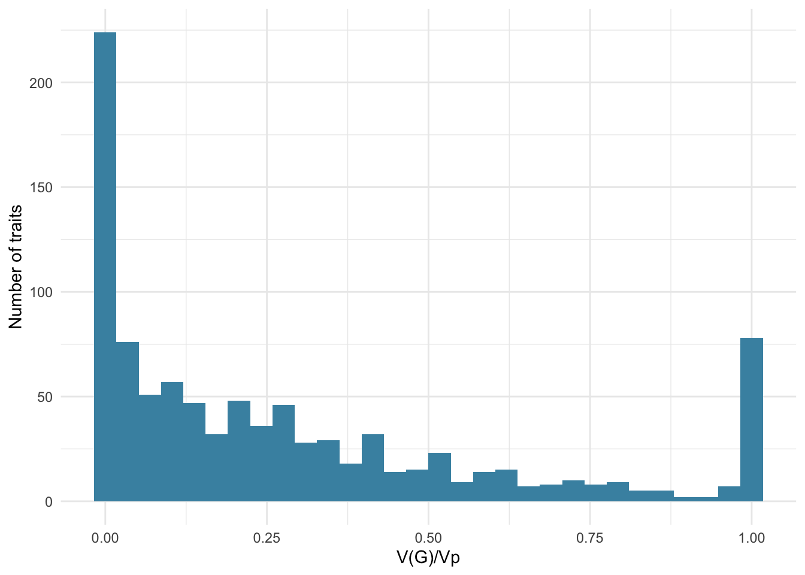
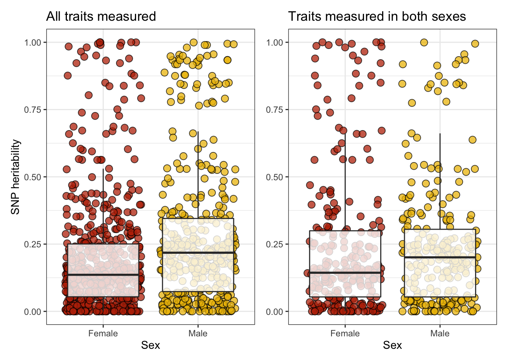
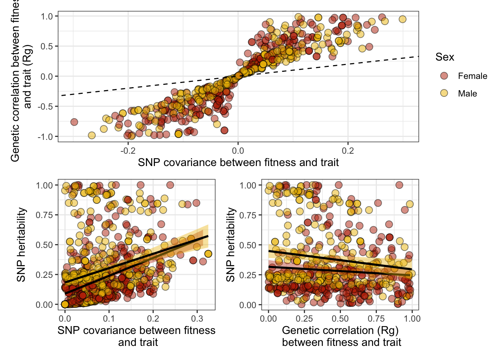
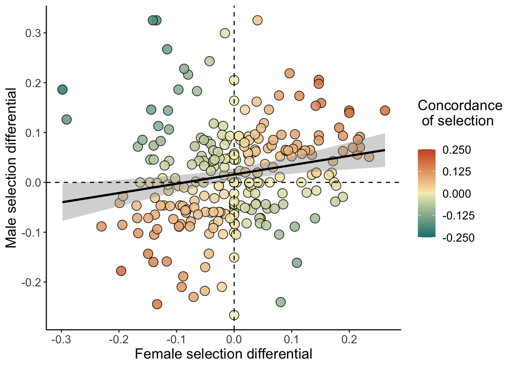
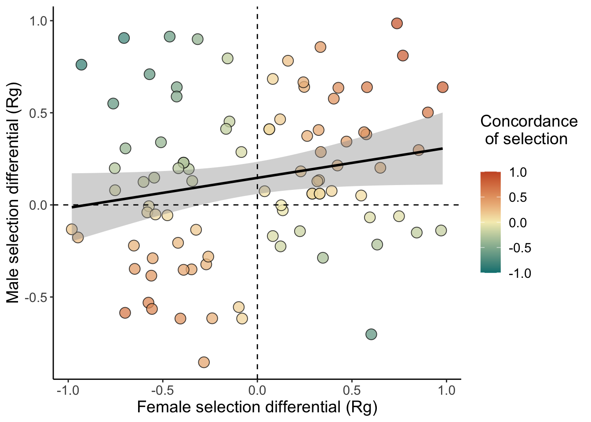

Last updated: 2022-05-11
Checks: 7 0
Knit directory: DGRP_sexual_conflict/
This reproducible R Markdown analysis was created with workflowr (version 1.7.0). The Checks tab describes the reproducibility checks that were applied when the results were created. The Past versions tab lists the development history.
Great! Since the R Markdown file has been committed to the Git repository, you know the exact version of the code that produced these results.
Great job! The global environment was empty. Objects defined in the global environment can affect the analysis in your R Markdown file in unknown ways. For reproduciblity it’s best to always run the code in an empty environment.
The command set.seed(20210706) was run prior to running the code in the R Markdown file. Setting a seed ensures that any results that rely on randomness, e.g. subsampling or permutations, are reproducible.
Great job! Recording the operating system, R version, and package versions is critical for reproducibility.
Nice! There were no cached chunks for this analysis, so you can be confident that you successfully produced the results during this run.
Great job! Using relative paths to the files within your workflowr project makes it easier to run your code on other machines.
Great! You are using Git for version control. Tracking code development and connecting the code version to the results is critical for reproducibility.
The results in this page were generated with repository version e82fc65. See the Past versions tab to see a history of the changes made to the R Markdown and HTML files.
Note that you need to be careful to ensure that all relevant files for the analysis have been committed to Git prior to generating the results (you can use wflow_publish or wflow_git_commit). workflowr only checks the R Markdown file, but you know if there are other scripts or data files that it depends on. Below is the status of the Git repository when the results were generated:
Ignored files:
Ignored: .DS_Store
Ignored: .Rhistory
Ignored: .Rproj.user/
Ignored: analysis/figure/
Ignored: code/.DS_Store
Ignored: gwas_data/
Untracked files:
Untracked: -Toms-laptop.Rhistory
Untracked: Manuscript/
Untracked: Reported_heritability.xlsx
Untracked: Rplot.pdf
Untracked: S_plots.pdf
Untracked: Selection_differential_plot.pdf
Untracked: Selection_differentials.pdf
Untracked: Selection_differentials_f.pdf
Untracked: Selection_differentials_m.pdf
Untracked: analysis/Random_plots.R
Untracked: code/LICENSE
Untracked: code/gcta64
Untracked: code/prettify
Untracked: code/toy.map
Untracked: code/toy.ped
Untracked: data/SNP_heritability.csv
Untracked: data/SNP_heritability_cleaned.csv
Untracked: data/SNP_selection.csv
Untracked: data/S_female.csv
Untracked: data/rfm_dimorphism_model.rds
Untracked: dimorphism_subset.pdf
Untracked: fitness_variation.pdf
Untracked: fits/
Untracked: lifetime_fecundity_S.pdf
Untracked: mating_latency_S.pdf
Unstaged changes:
Modified: .Rprofile
Modified: .gitattributes
Modified: .gitignore
Modified: DGRP_sexual_conflict.Rproj
Modified: README.md
Modified: _workflowr.yml
Modified: analysis/Main_analysis.Rmd
Modified: analysis/SNP_correlations.Rmd
Modified: analysis/_site.yml
Modified: analysis/license.Rmd
Modified: analysis/process_mashr.Rmd
Modified: analysis/run_GWAS.Rmd
Modified: analysis/run_mashr.Rmd
Modified: code/README.md
Modified: code/run_mashr.R
Modified: data/README.md
Modified: data/S_male.csv
Modified: data/all.dgrp.phenos_unscaled.csv
Modified: data/rfm.complete.csv
Modified: output/README.md
Note that any generated files, e.g. HTML, png, CSS, etc., are not included in this status report because it is ok for generated content to have uncommitted changes.
These are the previous versions of the repository in which changes were made to the R Markdown (analysis/SNP_heritabilities.Rmd) and HTML (docs/SNP_heritabilities.html) files. If you’ve configured a remote Git repository (see ?wflow_git_remote), click on the hyperlinks in the table below to view the files as they were in that past version.
| File | Version | Author | Date | Message |
|---|---|---|---|---|
| Rmd | e82fc65 | ausevo | 2022-05-11 | adding exploratory plots |
| html | 7bf0ee0 | ausevo | 2022-05-10 | Build site. |
| Rmd | 5b9883e | ausevo | 2022-05-10 | Add GCTA model outputs |
GCTA analysisHere we load the necessary packages to build this document and code in ‘tidy’ style. We also set the file path so that R can access the gcta64 software. Finally, we build a helper function to pass GCTA commands to the terminal. This function allows us to code entirely within R-studio, which is our strong preference.
library(tidyverse)
library(glue)
library(kableExtra)
library(DT)
library(MetBrewer)
library(patchwork)
library(rcartocolor)
gcta <- file.path(getwd(), "code/gcta64")
options(readr.show_col_types = FALSE)
# helper function to pass commands to the terminal
# Note that we set `intern = TRUE`, and pass the result of `system()` to `cat()`,
# ensuring that the Terminal output will be printed in this knitr report.
run_command <- function(shell_command, wd = getwd(), path = ""){
cat(system(glue("cd ", wd, path, "\n",shell_command), intern = TRUE), sep = '\n')
}
### useful code that I didn't end up needing
#remove the suffix that denotes the sex the trait was measured in and replace the level 'both' with 'pooled'
# mutate(Sex = recode(Sex, Both = "Pooled"),
# Trait = case_when(
# str_ends(Trait, ".f") | str_ends(Trait, ".m") ~ gsub('.{2}$', '', Trait)),
# `Trait 2` = case_when(
# str_ends(`Trait 2`, ".f") | str_ends(`Trait 2`, ".m") ~ gsub('.{2}$', '', `Trait 2`))) %>% traits <- read_csv("data/all.dgrp.phenos_unscaled.csv")
traits_for_gwas <-
traits %>%
# filter(!(`Trait guild` %in% allowed_guilds) | is.na(`Trait guild`)) %>%
group_by(Trait) %>%
summarise(lines_measured = length(unique(line))) %>%
ungroup() %>%
filter(lines_measured > 79) %>%
filter(Trait != "paraquat.resistance.2021.f" & Trait != "starvation.resistance.high.carb.diet.m") %>% # these traits call a gcta error, we remove for now
pull(Trait) # find traits with 80+ replicates
traits_for_gwas <- traits_for_gwas[!(grepl("fitness.late", traits_for_gwas))]
# replace any slashes in the trait name, e.g. "1/3-Methylhistidine.high.yeast.f", as this is not ok to use as a file name
traits_for_gwas <- str_replace_all(traits_for_gwas, "[/]", "_")
line_mean_phenotypes <- read_csv("data/all.dgrp.phenos_unscaled.csv") %>%
mutate(Trait = str_replace_all(Trait, "[/]", "_")) %>% # change to match `traits_for_gwas` list
filter(Trait %in% traits_for_gwas) %>%
filter(Trait != "paraquat.resistance.2021.f" & Trait != "starvation.resistance.high.carb.diet.m") %>% # these traits produce a gcta error, we remove for now
select(line, Trait, trait_value) %>%
#distinct(line, Trait, .keep_all = TRUE) %>% # Remove this line once Tom resolves the duplicates
spread(Trait, trait_value) %>%
mutate_at(vars(-line), ~ as.numeric(scale(.x))) %>% # scale the traits
mutate(line = paste("line", line, sep = "")) # add "line" in front of the line number to fit with plink/gcta formattingGCTA to estimate the genetic variances and heritabilities for each traitHere we estimate ‘SNP-heritability’ for each phenotype using a genomic relatedness matrix Restricted Maximum Likelihood (GREML) approach. GREML uses a set of SNPs \(S\) that are known across a population of individuals (or lines, in our case) to estimate the relatedness between random individuals (lines) and compares that with phenotypic variation across that set of individuals. This allows us to estimate the variation in phenotype that is explained by the known set of SNPs in our population. We can then divide this variance by the total variation found for the phenotype, giving the SNP-heritability. Note that SNP-heritability should be smaller than other estimates of heritability such as broad- or narrow-sense heritability, as it is limited to additive effects from a subset of the genome, while the latter two estimates encompass a broader range of genetic effects.
We use the GCTA software to run this analysis.
A few helpful exerts from the literature about GREML are provided below:
“Data from a GWAS that are collected to detect statistical associations between SNPs and complex traits are usually analyzed by testing each SNP individually for an association with the trait. To account for the large number of significance tests carried out, a very stringent P value is used. This reduces the occurrence of false positives, but it may cause many real associations to be missed, especially if individual SNPs have a small effect on the trait.”
“In contrast to single-SNP association analysis, the basic concept behind the
gcta64method is to fit the effects of all the SNPs as random effects using a mixed linear model (MLM).”
The below uses the gcta64 command –reml to estimate the genetic variance (V(G)), i.e. the variance explained by the GRM), environmental variance (V(e)), their sum (Vp), and the so-called “SNP heritability” (V(G)/Vp).
do_univariate_greml <- function(trait1){
# First make 'focal_data', a 2-column data frame with the line and the focal phenotype value
focal_data <- line_mean_phenotypes %>%
select(line, !! trait1)
names(focal_data)[2] <- c("focal_phenotype")
# Write a file with the line and phenotype data called phenotype.txt, for gcta64
pheno_data <- focal_data %>%
# filter(!(line %in% lines_to_prune)) %>%
mutate(line_copy = line) %>%
select(line, line_copy, focal_phenotype) %>%
as.matrix()
pheno_data %>%
write.table(row.names = FALSE, col.names = FALSE,
file = "gwas_data/derived/phenotype.txt", quote = FALSE)
console_output <- suppressWarnings(capture.output(
run_command(glue("{gcta} --reml --reml-maxit 10000 --grm gcta_GRM --pheno phenotype.txt --out delete_me"),
path = "/gwas_data/derived/")))
errors <- console_output[str_detect(console_output, "[Ee]rror")]
if(length(errors) == 0) errors <- NA
if(length(errors) > 1) errors <- paste(errors, sep = "; ")
rbind(read.delim("gwas_data/derived/delete_me.hsq", sep = "\t") ,
data.frame(Source = "Errors", Variance = errors, SE = NA)) %>%
mutate(Trait = trait1) %>% select(Trait, everything())
}
# Now run the model for every trait and create a large tibble using map_dfr
if(!file.exists("gwas_data/variance_components.csv")){
variance_components <-
map_dfr(traits_for_gwas, do_univariate_greml) %>%
filter(Source %in% c("V(G)", "V(e)", "Vp", "V(G)/Vp")) %>%
mutate(Variance = as.numeric(Variance)) %>%
rename(Parameter = Source) %>%
as_tibble()
write_csv(variance_components, file = "gwas_data/variance_components.csv")
} else variance_components <- read_csv("gwas_data/variance_components.csv")Currently two phenotypes call errors when we run the univariate GREML model: paraquat.resistance.2021.f and starvation.resistance.high.carb.diet.m. The error is Error: the information matrix is not invertible.
For now we simply don’t run models for these traits, so there are no variance estimates for these traits.
trait_info <- read_csv("data/all.dgrp.phenos_unscaled.csv") %>%
mutate(Trait = str_replace_all(Trait, "[/]", "_")) %>%
select(-trait_value) %>%
distinct(Trait, Sex, `Trait guild`, `Trait description`, Reference)
variance_components <- left_join(variance_components, trait_info)
# wrangle so that each variance component is its own column
variance_components_wide <-
variance_components %>%
pivot_wider(names_from = Parameter,
values_from = c(Variance, SE)) %>%
mutate(across(where(is.numeric), round, 2)) %>%
rename(`V(G)` = `Variance_V(G)`,
`V(e)` = `Variance_V(e)`,
`Vp` = `Variance_Vp`,
`V(G)/Vp` = `Variance_V(G)/Vp`)
write_csv(variance_components_wide, file = "data/SNP_heritability.csv")
# Below we remove the suffix that denotes the sex the trait was measured in and replace the level 'both' with 'pooled'
SNP_heritability <-
variance_components_wide %>%
mutate(Sex = recode(Sex, Both = "Pooled"),
Trait = case_when(
str_ends(Trait, ".f") | str_ends(Trait, ".m") ~ gsub('.{2}$', '', Trait))) %>%
select(Trait, Sex, everything()) %>% # reorder the columns for the table %>%
arrange(Trait)
write_csv(SNP_heritability, file = "data/SNP_heritability_cleaned.csv")
# create an interactive table
my_data_table <- function(df){
datatable(
df, rownames=FALSE,
autoHideNavigation = TRUE,
extensions = c("Scroller", "Buttons"),
options = list(
dom = 'Bfrtip',
deferRender=TRUE,
scrollX=TRUE, scrollY=800,
scrollCollapse=TRUE,
buttons =
list('pageLength', 'colvis', 'csv', list(
extend = 'pdf',
pageSize = 'A4',
orientation = 'landscape',
filename = 'SNP_heritability')),
pageLength = 1000
)
)
}
my_data_table(SNP_heritability)p1 <-
SNP_heritability %>%
ggplot(aes(x = `V(G)/Vp`)) +
geom_histogram(fill = met.brewer("Hokusai2")[3]) +
labs(y = "Number of traits") +
theme_minimal()
p1
| Version | Author | Date |
|---|---|---|
| 7bf0ee0 | ausevo | 2022-05-10 |
GCTA to estimate genetic covariance between traits and fitnessHere we use the gcta64 command --reml-bivar to estimate the genetic covariance (C(G)_tr12), i.e. the co-variance explained by the known SNPs in the DGRP), and the genetic correlation (rG), in addition to the univariate parameters for trait 1 and trait 2 mentioned above. Note that for traits where the genetic variance is estimated to be low, the model cannot reliably estimate genetic covariance or correlations.
We use rG to calculate the Robertson-Price identity, which estimates the response to selection for a trait (or the selection differential… check).
# wrangle data so that it is specific to the sex the trait was measured for i.e. female, male or pooled sexes
female_line_means <- line_mean_phenotypes %>%
select(line, ends_with(".f"))
female_trait_list <- line_mean_phenotypes %>%
select(ends_with(".f")) %>%
select(-fitness.early.f) %>%
colnames()
# build the function to run the bivariate GREML
do_bivar_greml_f <- function(trait1, trait2){
# First make 'focal_data', a 2-column data frame with the line and the focal phenotype value
focal_data <- female_line_means %>%
select(line, !! trait1, !! trait2)
names(focal_data)[2:3] <- c("focal_pheno1", "focal_pheno2")
# Write a file with the line and phenotype data called phenotype.txt, for gcta64
pheno_data <- focal_data %>%
# filter(!(line %in% lines_to_prune)) %>%
mutate(line_copy = line) %>%
select(line, line_copy, focal_pheno1, focal_pheno2) %>%
as.matrix()
pheno_data %>%
write.table(row.names = FALSE, col.names = FALSE,
file = "gwas_data/derived/phenotype_pair.txt", quote = FALSE)
# Note that the warnings come when gcta could not fit the model properly. I save these errors especially, so no need to print them.
console_output <- suppressWarnings(capture.output(
run_command(glue("{gcta} --reml-bivar --reml-bivar-lrt-rg 0 --reml-maxit 10000 --grm gcta_GRM --pheno phenotype_pair.txt --out delete_me"),
path = "/gwas_data/derived/")))
errors <- console_output[str_detect(console_output, "[Ee]rror")]
if(length(errors) == 0) errors <- NA
if(length(errors) > 1) errors <- paste(errors, sep = "; ")
traits <- sort(c(trait1, trait2))
rbind(read.delim("gwas_data/derived/delete_me.hsq", sep = "\t") ,
data.frame(Source = "Errors", Variance = errors, SE = NA)) %>%
mutate(`Trait 1` = traits[1], `Trait 2` = traits[2]) %>%
select(`Trait 1`, `Trait 2`, everything())
}
# run for all traits - this works, except I need to rewrite the function for each level of sex (done below)
if(!file.exists("data/SNP_selection.csv")){
female_results <- map2_dfr("fitness.early.f", female_trait_list, do_bivar_greml_f)
# unlink deletes files
unlink(c("data/derived/delete_me.log", "data/derived/phenotype_pair.txt", "data/derived/delete_me.hsq"))
unlink(list.files("data/derived/", pattern = "gcta_GRM", full.names = TRUE))
# clean the data up
female_results_concise <-
female_results %>%
as_tibble() %>%
filter(Source %in% c("V(G)_tr1", "V(e)_tr1", "Vp_tr1", "V(G)/Vp_tr1",
"V(G)_tr2", "V(e)_tr2", "Vp_tr2", "V(G)/Vp_tr2",
"C(G)_tr12", "rG")) %>%
mutate(Variance = as.numeric(Variance),
Fitness_sex = "Female") %>%
rename(Parameter = Source)
} else "Already calculated"# wrangle data so that it is specific to the sex the trait was measured for i.e. female, male or pooled sexes
male_line_means <- line_mean_phenotypes %>%
select(line, ends_with(".m"))
male_trait_list <- line_mean_phenotypes %>%
select(ends_with(".m")) %>%
select(-fitness.early.m) %>%
colnames()
# build the function to run the bivariate GREML
do_bivar_greml_m <- function(trait1, trait2){
# First make 'focal_data', a 2-column data frame with the line and the focal phenotype value
focal_data <- male_line_means %>%
select(line, !! trait1, !! trait2)
names(focal_data)[2:3] <- c("focal_pheno1", "focal_pheno2")
# Write a file with the line and phenotype data called phenotype.txt, for gcta64
pheno_data <- focal_data %>%
# filter(!(line %in% lines_to_prune)) %>%
mutate(line_copy = line) %>%
select(line, line_copy, focal_pheno1, focal_pheno2) %>%
as.matrix()
pheno_data %>%
write.table(row.names = FALSE, col.names = FALSE,
file = "gwas_data/derived/phenotype_pair.txt", quote = FALSE)
# Note that the warnings come when gcta could not fit the model properly. I save these errors especially, so no need to print them.
console_output <- suppressWarnings(capture.output(
run_command(glue("{gcta} --reml-bivar --reml-bivar-lrt-rg 0 --reml-maxit 10000 --grm gcta_GRM --pheno phenotype_pair.txt --out delete_me"),
path = "/gwas_data/derived/")))
errors <- console_output[str_detect(console_output, "[Ee]rror")]
if(length(errors) == 0) errors <- NA
if(length(errors) > 1) errors <- paste(errors, sep = "; ")
traits <- sort(c(trait1, trait2))
rbind(read.delim("gwas_data/derived/delete_me.hsq", sep = "\t") ,
data.frame(Source = "Errors", Variance = errors, SE = NA)) %>%
mutate(`Trait 1` = traits[1], `Trait 2` = traits[2]) %>%
select(`Trait 1`, `Trait 2`, everything())
}
# run for all traits - this works, except I need to rewrite the function for each level of sex (done below)
if(!file.exists("data/SNP_selection.csv")){
male_results <- map2_dfr("fitness.early.m", male_trait_list, do_bivar_greml_m)
# unlink deletes files
unlink(c("data/derived/delete_me.log", "data/derived/phenotype_pair.txt", "data/derived/delete_me.hsq"))
unlink(list.files("data/derived/", pattern = "gcta_GRM", full.names = TRUE))
# clean the data up
male_results_concise <-
male_results %>%
as_tibble() %>%
filter(Source %in% c("V(G)_tr1", "V(e)_tr1", "Vp_tr1", "V(G)/Vp_tr1",
"V(G)_tr2", "V(e)_tr2", "Vp_tr2", "V(G)/Vp_tr2",
"C(G)_tr12", "rG")) %>%
mutate(Variance = as.numeric(Variance),
Fitness_sex = "Male") %>%
rename(Parameter = Source)
} else "Already calculated"# wrangle data so that it is specific to the sex the trait was measured for i.e. female, male or pooled sexes
pooled_line_means <- line_mean_phenotypes %>%
select(line, fitness.early.f, fitness.early.m, !ends_with(c(".f", ".m")))
pooled_trait_list <- line_mean_phenotypes %>%
select(!ends_with(c(".f", ".m"))) %>%
select(-line) %>%
colnames()
# build the function to run the bivariate GREML
do_bivar_greml_p <- function(trait1, trait2){
# First make 'focal_data', a 2-column data frame with the line and the focal phenotype value
focal_data <- pooled_line_means %>%
select(line, !! trait1, !! trait2)
names(focal_data)[2:3] <- c("focal_pheno1", "focal_pheno2")
# Write a file with the line and phenotype data called phenotype.txt, for gcta64
pheno_data <- focal_data %>%
# filter(!(line %in% lines_to_prune)) %>%
mutate(line_copy = line) %>%
select(line, line_copy, focal_pheno1, focal_pheno2) %>%
as.matrix()
pheno_data %>%
write.table(row.names = FALSE, col.names = FALSE,
file = "gwas_data/derived/phenotype_pair.txt", quote = FALSE)
# Note that the warnings come when gcta could not fit the model properly. I save these errors especially, so no need to print them.
console_output <- suppressWarnings(capture.output(
run_command(glue("{gcta} --reml-bivar --reml-bivar-lrt-rg 0 --reml-maxit 10000 --grm gcta_GRM --pheno phenotype_pair.txt --out delete_me"),
path = "/gwas_data/derived/")))
errors <- console_output[str_detect(console_output, "[Ee]rror")]
if(length(errors) == 0) errors <- NA
if(length(errors) > 1) errors <- paste(errors, sep = "; ")
traits <- sort(c(trait1, trait2))
rbind(read.delim("gwas_data/derived/delete_me.hsq", sep = "\t") ,
data.frame(Source = "Errors", Variance = errors, SE = NA)) %>%
mutate(`Trait 1` = traits[1], `Trait 2` = traits[2]) %>%
select(`Trait 1`, `Trait 2`, everything())
}
# run for all traits - this works, except I need to rewrite the function for each level of sex (done below)
if(!file.exists("data/SNP_selection.csv")){
pooled_female <- map2_dfr("fitness.early.f", pooled_trait_list, do_bivar_greml_p)
# unlink deletes files
unlink(c("data/derived/delete_me.log", "data/derived/phenotype_pair.txt", "data/derived/delete_me.hsq"))
unlink(list.files("data/derived/", pattern = "gcta_GRM", full.names = TRUE))
pooled_male <- map2_dfr("fitness.early.m", pooled_trait_list, do_bivar_greml_p)
# unlink deletes files
unlink(c("data/derived/delete_me.log", "data/derived/phenotype_pair.txt", "data/derived/delete_me.hsq"))
unlink(list.files("data/derived/", pattern = "gcta_GRM", full.names = TRUE))
# clean the data up
pooled_results <- rbind(pooled_female, pooled_male)
pooled_results_concise <-
pooled_results %>%
as_tibble() %>%
filter(Source %in% c("V(G)_tr1", "V(e)_tr1", "Vp_tr1", "V(G)/Vp_tr1",
"V(G)_tr2", "V(e)_tr2", "Vp_tr2", "V(G)/Vp_tr2",
"C(G)_tr12", "rG")) %>%
mutate(Variance = as.numeric(Variance),
Fitness_sex = if_else(`Trait 2` == "fitness.early.f", "Female", "Male")) %>%
rename(Parameter = Source)
} else "Already calculated"Note that when we combine the SNP_heritability tibble with the SNP_selection tibble we will get some duplicate columns. This is because the bivariate GREML calculates everything that the univariate GREML does. I’ll check if they are identical and delete redundant columns if so. I get the feeling that they’ll be slightly different because the bivariate GREML only uses the lines that have been measured for both traits; generally a smaller subset of those a trait was measured across.
if(!file.exists("data/SNP_selection.csv")){
SNP_selection_response_estimates <-
rbind(female_results_concise, male_results_concise, pooled_results_concise) %>%
# create a common name so that we can join the meta data
rename(Trait = `Trait 1`)
write_csv(SNP_selection_response_estimates, file = "data/SNP_selection.csv")
} else SNP_selection_response_estimates <- read_csv("data/SNP_selection.csv")
# join the meta data
SNP_selection_response_estimates <- left_join(SNP_selection_response_estimates, trait_info)
# wrangle so that each variance component is its own column
SNP_selection_response_estimates_wide <-
SNP_selection_response_estimates %>%
pivot_wider(names_from = Parameter, values_from = c(Variance, SE)) %>%
unnest(cols = c(`Variance_V(G)_tr1`, `Variance_V(G)_tr2`, `Variance_C(G)_tr12`,
`Variance_V(e)_tr1`, `Variance_V(e)_tr2`, Variance_Vp_tr1,
Variance_Vp_tr2, `Variance_V(G)/Vp_tr1`, `Variance_V(G)/Vp_tr2`,
Variance_rG, `SE_V(G)_tr1`, `SE_V(G)_tr2`, `SE_C(G)_tr12`,
`SE_V(e)_tr1`, `SE_V(e)_tr2`, SE_Vp_tr1, SE_Vp_tr2, `SE_V(G)/Vp_tr1`,
`SE_V(G)/Vp_tr2`, SE_rG))
# this part here is to make sure fitness is in the same trait column throughout the tibble. Trait 1 is determined alphabetically, so it's sometimes fitness and sometimes is not. We fix that below
a <-
SNP_selection_response_estimates_wide %>%
filter(Trait == "fitness.early.f" | Trait == "fitness.early.m") %>%
rename(`Trait 1` = Trait,
# rename to more specific names. No name switching needed for this subset
`Variance_V(G)_trait` = `Variance_V(G)_tr2`,
`Variance_V(G)_fitness` = `Variance_V(G)_tr1`,
`Variance_V(e)_trait` = `Variance_V(e)_tr2`,
`Variance_V(e)_fitness` = `Variance_V(e)_tr1`,
Variance_Vp_trait = Variance_Vp_tr2,
Variance_Vp_fitness = Variance_Vp_tr1,
`Variance_V(G)/Vp_trait` = `Variance_V(G)/Vp_tr2`,
`Variance_V(G)/Vp_fitness` = `Variance_V(G)/Vp_tr1`,
`SE_V(G)_trait` = `SE_V(G)_tr2`,
`SE_V(G)_fitness` = `SE_V(G)_tr1`,
`SE_V(e)_trait` = `SE_V(e)_tr2`,
`SE_V(e)_fitness` = `SE_V(e)_tr1`,
SE_Vp_trait = SE_Vp_tr2,
SE_Vp_fitness = SE_Vp_tr1,
`SE_V(G)/Vp_trait` = `SE_V(G)/Vp_tr2`,
`SE_V(G)/Vp_fitness` = `SE_V(G)/Vp_tr1`)
b <-
SNP_selection_response_estimates_wide %>%
filter(`Trait 2` == "fitness.early.f" | `Trait 2` == "fitness.early.m") %>%
rename(`Trait 1` = `Trait 2`,
`Trait 2` = Trait,
# switch the names so that they match the order of trait1 and trait2
`Variance_V(G)_trait` = `Variance_V(G)_tr1`,
`Variance_V(G)_fitness` = `Variance_V(G)_tr2`,
`Variance_V(e)_trait` = `Variance_V(e)_tr1`,
`Variance_V(e)_fitness` = `Variance_V(e)_tr2`,
Variance_Vp_trait = Variance_Vp_tr1,
Variance_Vp_fitness = Variance_Vp_tr2,
`Variance_V(G)/Vp_trait` = `Variance_V(G)/Vp_tr1`,
`Variance_V(G)/Vp_fitness` = `Variance_V(G)/Vp_tr2`,
`SE_V(G)_trait` = `SE_V(G)_tr1`,
`SE_V(G)_fitness` = `SE_V(G)_tr2`,
`SE_V(e)_trait` = `SE_V(e)_tr1`,
`SE_V(e)_fitness` = `SE_V(e)_tr2`,
SE_Vp_trait = SE_Vp_tr1,
SE_Vp_fitness = SE_Vp_tr2,
`SE_V(G)/Vp_trait` = `SE_V(G)/Vp_tr1`,
`SE_V(G)/Vp_fitness` = `SE_V(G)/Vp_tr2`)
SNP_selection_response_estimates_wide <-
rbind(a, b) %>%
rename(Fitness_component = `Trait 1`,
Trait = `Trait 2`)
SNP_selection_response_estimates_wide <-
left_join(SNP_selection_response_estimates_wide, trait_info) %>%
select(Trait, Fitness_component, Fitness_sex, Sex, `Trait guild`, `Trait description`, Reference, everything()) %>%
# Trait_sex shows which sex the trait was measured in, while Fitness_sex shows the sex that `(C(G)_tr12)` and `rG` were calculated for
# These are generally the same, with the exception of traits that were measured with the sexes pooled (commonly larval traits)
# For these pooled traits we ran the bivariate GREML twice - once for female fitness and again for male fitness
rename(Trait_sex = Sex)all_SNP_data <-
left_join(SNP_selection_response_estimates_wide, SNP_heritability)\(~\)
full_SNP_heritability_plot <-
SNP_selection_response_estimates_wide %>%
filter(`Variance_C(G)_tr12` > -1 & `Variance_V(G)/Vp_trait` > -1 & `Variance_C(G)_tr12` < 1 & `Variance_V(G)/Vp_trait` < 1) %>%
ggplot(aes(x = Fitness_sex, y = `Variance_V(G)/Vp_trait`, fill = Fitness_sex)) +
geom_jitter(shape = 21, size = 3, alpha = 0.75) +
scale_fill_manual(values = met.brewer("VanGogh2", 2)) +
geom_boxplot(outlier.shape = NA, alpha = 0.8, fill = "white") +
labs(title = "All traits measured",
x = "Sex",
y = "SNP heritability") +
theme_bw() +
theme(legend.position = "none")data <- SNP_selection_response_estimates_wide %>%
mutate(Trait = case_when(
str_ends(Trait, ".f") | str_ends(Trait, ".m") ~ gsub('.{2}$', '', Trait)))
a <- data %>%
filter(Fitness_sex == "Male")
b <- data %>%
filter(Fitness_sex == "Female")
# there are 264 traits for which we have measures in both sexes
SNP_both_sexes <- inner_join(a, b, by = "Trait") %>%
filter(Trait != "NA")
subset_SNP_heritability_plot <-
SNP_both_sexes %>%
pivot_longer(cols = c(`Variance_V(G)/Vp_trait.x`, `Variance_V(G)/Vp_trait.y`), names_to = "Sex", values_to = "SNP_heritability") %>%
mutate(Sex = if_else(str_ends(Sex, ".x"), "Male", "Female")) %>%
select(-c(Fitness_sex.x, Fitness_sex.y)) %>%
filter(SNP_heritability > -1 & SNP_heritability < 1) %>%
ggplot(aes(x = Sex, y = SNP_heritability, fill = Sex)) +
geom_jitter(shape = 21, size = 3, alpha = 0.75) +
scale_fill_manual(values = met.brewer("VanGogh2", 2)) +
geom_boxplot(outlier.shape = NA, alpha = 0.8, fill = "white") +
labs(title = "Traits measured in both sexes",
x = "Sex",
y = NULL) +
theme_bw() +
theme(legend.position = "none")
full_SNP_heritability_plot + subset_SNP_heritability_plot
\(~\)
1. Do traits correlated with fitness have lower heritabilities?
Following Fisher’s theorem and assuming a constant environment, in the absence of new variation, selection is expected to erode all additive genetic variation for fitness. One implication of this expectation is that traits that are correlated with fitness should show reduced additive genetic variance relative to those that are not correlated with fitness (Robertson 1955b).
There are previous studies that have compared fitness related traits i.e. those implicated with reproduction, with morphological traits, which are assumed to have lesser relationships with fitness.
The problem is associating these traits with _lifetime) fitness. This shouldn’t be such a problem for us…
Multiple studies looking at this corollary use phenotypic correlations with fitness rather than genetic. Once again, this is no problem for us…
Even if there is lots of additive genetic variance for a trait and it is correlated with fitness, if fitness has a high environmental variance component the strength of selection on the trait will be weak.
Houle (1992) looks like an important meta-analysis type work
# some plots
a_plot <-
SNP_selection_response_estimates_wide %>%
filter(`Variance_C(G)_tr12` > -1 & Variance_rG > -1 & `Variance_C(G)_tr12` < 1 & Variance_rG < 1) %>%
#`Trait guild` != "Metabolome" & `Trait guild` != "CHC", `Trait guild` != "Microbiome") %>%
ggplot(aes(x = `Variance_C(G)_tr12`, y = Variance_rG, fill = Fitness_sex)) +
geom_point(shape = 21, size = 3, alpha = 0.5) +
scale_fill_manual(values = met.brewer("VanGogh2", 2)) +
geom_abline(intercept = 0, slope = 1, linetype = 2) +
labs(x = "SNP covariance between fitness and trait",
y = "Genetic correlation between fitness\nand trait (Rg)",
fill = "Sex") +
theme_bw()
b_plot <-
SNP_selection_response_estimates_wide %>%
filter(`Variance_C(G)_tr12` > -1 & `Variance_V(G)/Vp_trait` > -1 & `Variance_C(G)_tr12` < 1 & `Variance_V(G)/Vp_trait` < 1) %>%
#`Trait guild` != "Metabolome" & `Trait guild` != "CHC", `Trait guild` != "Microbiome") %>%
mutate(`Variance_C(G)_tr12` = abs(`Variance_C(G)_tr12`)) %>%
ggplot(aes(x = `Variance_C(G)_tr12`, y = `Variance_V(G)/Vp_trait`, fill = Fitness_sex)) +
#geom_hex()
geom_point(shape = 21, size = 3, alpha = 0.5) +
geom_smooth(method = "lm", colour = "black") +
scale_fill_manual(values = met.brewer("VanGogh2", 2)) +
labs(x = "SNP covariance between fitness\n and trait",
y = "SNP heritability") +
theme_bw() +
theme(legend.position = "none")
c_plot <-
SNP_selection_response_estimates_wide %>%
filter(Variance_rG > -1 & `Variance_V(G)/Vp_trait` > -1 & Variance_rG < 1 & `Variance_V(G)/Vp_trait` < 1) %>%
#`Trait guild` != "Metabolome" & `Trait guild` != "CHC", `Trait guild` != "Microbiome") %>%
mutate(Variance_rG = abs(Variance_rG)) %>%
ggplot(aes(x = Variance_rG, y = `Variance_V(G)/Vp_trait`, fill = Fitness_sex)) +
#geom_hex() +
geom_point(shape = 21, size = 3, alpha = 0.5) +
geom_smooth(method = "lm", colour = "black") +
scale_fill_manual(values = met.brewer("VanGogh2", 2)) +
labs(x = "Genetic correlation (Rg)\n between fitness and trait",
y = "SNP heritability") +
theme_bw() +
theme(legend.position = "none")
a_plot / (b_plot + c_plot)
Figure X: a the relationship between the genetic correlation between fitness and trait (Rg) and the SNP covariance between fitness and trait. Both of these metrics could potentially be used to estimate the response to selection experienced by a trait (or the selection differential, not sure yet), following the Robertson-Price identity. b and c show the relationship between these metrics and heritability.
\(~\)
2. Do traits correlated with fitness have higher levels of both additive and residual variance
Note that heritability can also decline with an increase in environmental variance and no decrease (or an increase) in genetic variance. If true, this makes a simple regression with heritability and fitness misleading.
Using evolvability as his metric, Houle (1992) found that characters assumed to be closely related to fitness have higher evolvabilities than do trait with looser relationships to fitness. This suggests that the negative relationship between fitness and heritability is due to increased environmental variance in fitness related traits, not a decrease in additive genetic variance.
\(~\)
\(~\)
We have found selection differentials (or responses to selection) acting on traits in females and males. For those traits where we have a measure of both, we can quantify sexually antagonistic selection by finding traits that have selection operating in opposite directions, depending on which sex the trait is expressed in.
Innocenti and Morrow (2011) present an index for measuring the intensity for sexually antagonistic selection:
\(I = \frac{\beta_M \beta_F}{\sqrt{(\beta_M^{2} + \beta_F^{2})/2}}\)
Where \(B_F\) and \(B_M\) are the standardised selection gradients for females and males respectively.
From Innocenti and Morrow:
This index is positive when selection is concordant in the two sexes, negative when antagonistic in the two sexes, and is zero when selection is absent in one sex (note that it will miss conflict that occurs when strong stabilizing selection is present in that sex). Finally it is proportional to the absolute intensity of selection.
Additionally, it has the desirable properties of being symmetrical and normally distributed for a random set of normally distributed \(B_F\), \(B_M\). |I| is also always included in the interval between the absolute values of the selection gradient in the two sexes, and it coincides with them when \(B_F\) = \(B_M\). As a potential drawback, it should be noted that such quantity is not defined when \(B_F\) = \(B_M\) = 0, even though it makes little sense to estimate how concordant or antagonistic directional selection is when it is absent in both sexes.
\(~\)
# create our sexual antagonism tibble by joining the female and male tibbles by traits they both share
SNP_antagonism <- SNP_both_sexes %>%
rename(Trait_covariance_male_fitness = `Variance_C(G)_tr12.x`,
Trait_covariance_female_fitness = `Variance_C(G)_tr12.y`) %>%
select(-c(Fitness_sex.x, Fitness_sex.y)) %>%
# calculate the innocenti and morrow index
mutate(Selection_index = Trait_covariance_female_fitness * Trait_covariance_male_fitness / sqrt(((Trait_covariance_female_fitness)^2 + (Trait_covariance_male_fitness)^2)/2)) %>%
# get rid of traits with unrealistic covariances
filter(Trait_covariance_male_fitness > -5,
Trait_covariance_female_fitness < 2 & Trait_covariance_female_fitness > -5)
# plot the data
sexual_concordance_plot <-
ggplot(data = SNP_antagonism, aes(x = Trait_covariance_female_fitness, y = Trait_covariance_male_fitness, fill = Selection_index)) +
#geom_hex(bins = 20) +
geom_point(shape = 21, alpha = 0.85, size = 4, show.legend = TRUE) + #width = 0.003, height = 0.003) +
#geom_point(shape = 21, alpha = 0.9, size = 5, show.legend = FALSE) +
geom_smooth(method = 'lm', color='black') +
geom_hline(yintercept = 0, linetype = 2) +
geom_vline(xintercept = 0, linetype = 2) +
#coord_cartesian(xlim = c(-0.35, 0.35), ylim = c(-0.4, 0.4)) +
scale_fill_carto_c(palette = "Geyser",
breaks=c(-0.25, -0.125, 0, 0.125, 0.25),
limits=c(-0.25,0.25)) +
labs(x = "Female selection differential",
y = "Male selection differential",
fill = "Concordance\n of selection\n") +
theme_bw() +
theme(panel.border= element_blank(),
axis.line=element_line(),
text = element_text(size=14),
panel.grid.major.x = element_blank(),
panel.grid.major.y = element_blank(),
panel.grid.minor.y = element_blank(),
panel.grid.minor.x = element_blank(),
axis.title.x = element_text(size = 14),
axis.title.y = element_text(size = 14))
sexual_concordance_plot
data <- SNP_selection_response_estimates_wide %>%
select(Trait, Fitness_sex, Trait_sex, Variance_rG) %>%
mutate(Trait = case_when(
str_ends(Trait, ".f") | str_ends(Trait, ".m") ~ gsub('.{2}$', '', Trait)))
a <- data %>%
filter(Fitness_sex == "Male") %>%
select(-Trait_sex)
b <- data %>%
filter(Fitness_sex == "Female") %>%
select(-Trait_sex)
# create our sexual antagonism tibble by joining the female and male tibbles by traits they both share
SNP_antagonism_rg <- inner_join(a, b, by = "Trait") %>%
rename(Trait_rg_male_fitness = Variance_rG.x,
Trait_rg_female_fitness = Variance_rG.y) %>%
select(-c(Fitness_sex.x, Fitness_sex.y)) %>%
# calculate the innocenti and morrow index
mutate(Selection_index = Trait_rg_female_fitness * Trait_rg_male_fitness / sqrt(((Trait_rg_female_fitness)^2 + (Trait_rg_male_fitness)^2)/2)) %>%
# get rid of traits with unrealistic covariances
filter(Trait != "NA",
Trait_rg_male_fitness > -1 & Trait_rg_male_fitness < 1,
Trait_rg_female_fitness < 1 & Trait_rg_female_fitness > -1)
sexual_concordance_plot_rg <-
ggplot(data = SNP_antagonism_rg, aes(x = Trait_rg_female_fitness, y = Trait_rg_male_fitness, fill = Selection_index)) +
#geom_hex(bins = 20) +
geom_point(shape = 21, alpha = 0.75, size = 4, show.legend = TRUE) + #width = 0.003, height = 0.003) +
#geom_point(shape = 21, alpha = 0.9, size = 5, show.legend = FALSE) +
geom_smooth(method = 'lm', color='black') +
geom_hline(yintercept = 0, linetype = 2) +
geom_vline(xintercept = 0, linetype = 2) +
#coord_cartesian(xlim = c(-0.4, 0.4), ylim = c(-0.4, 0.4)) +
scale_fill_carto_c(palette = "Geyser",
breaks=c(-1, -0.5, 0, 0.5, 1),
limits=c(-1, 1)) +
labs(x = "Female selection differential (Rg)",
y = "Male selection differential (Rg)",
fill = "Concordance\n of selection\n") +
theme_bw() +
theme(panel.border= element_blank(),
axis.line=element_line(),
text = element_text(size=14),
panel.grid.major.x = element_blank(),
panel.grid.major.y = element_blank(),
panel.grid.minor.y = element_blank(),
panel.grid.minor.x = element_blank(),
axis.title.x = element_text(size = 14),
axis.title.y = element_text(size = 14))
sexual_concordance_plot_rg
sessionInfo()